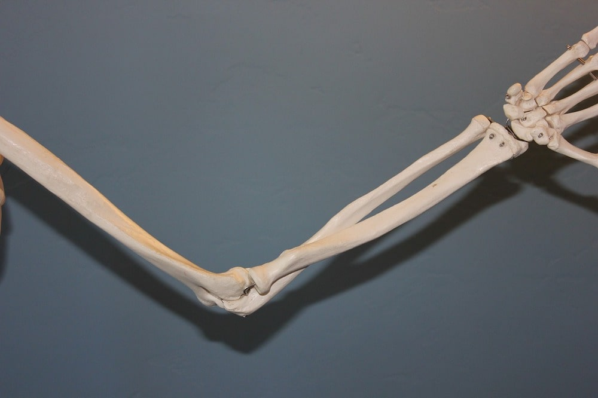

Conditions we treat
Osteopaths work head to toe with the musculoskeletal system, which can be symptomatic for many reasons. Here at Kibworth Osteopaths we are proud to be able to offer treatment to patients from birth onwards.
Look below to find out more about what we treat or follow the relevant link to take you straight there.
What we treat
Lower back pain (lumbar spine) and 'Sciatica'
This is probably what we see most commonly, and can arise at any age, for a multitude of reasons, ranging from sports injuries, trauma, to a sedentary lifestyle. There are lots of structures in the spinal column that can be injured (muscles, ligaments, spinal joints and discs), and osteopaths are well equipped to differentiate between different spinal injuries, and work hands on (alongside lots of other techniques i.e. sports taping) to help ease pain, as well as prevent future injury/damage.
Osteoarthritis can also affect the lumbar spine in varying degrees. Whilst there is no cure for this, patients can feel their symptoms are more manageable with treatment and suitable carefully prescribed exercises.
Pain caused by irritation to the sciatic nerve (sciatica) is also something Osteopaths see daily. Working out why and how the sciatic nerve is irritated is essential as there are many potential causes.
Neck pain (cervical spine)
Neck pain can arise at any time, and at any age, however injury here is commonly linked to how the neck is used. Neck pain can arise from poor posture, stress, whiplash trauma, overuse of technology (laptops, phones), regular long drives and pillows to name but a few causes.
All of these can cause stiffness to the neck joints as well as muscle tightness, which can then result in neck pain, and on occasion, symptoms (such as pins and needles or pain) into an arm/hand. Headaches can also occur as a result of tight muscles in the head and neck.
Osteoarthritis can affect the neck, causing tightness to the muscles and stiffness in the neck which can cause limited movement. Osteopaths whilst not being able to take away degenerative changes may be able to help mange symptoms caused by osteoarthritis in the neck.
Headaches
Headaches occur for many reasons, mostly these are not serious, however you should always see your GP to help establish the cause of your headaches. One of the most common causes of headache that is from tension in the muscles and joints of the neck and upper spine. These headaches are often referred to as cervicogenic headaches.
Osteopathic treatment may help with headaches that are caused from neck problems. Release of tight muscles and joints can help relieve tension in these structures. Osteopaths can also provide lifestyle advice to help combat other reasons for your headaches, for example, postural advice, pillow heights, or recommend you have an eye test.
Hip pain
Not all hip pain is osteoarthritis! Hip pain can come from the muscles that support the hip joint; it can be referred from the lower back; and even come from a fluid filled pouch called the trochanteric bursa (that sits on the outside of the hip). Overuse injuries are common in the hip is common in runners.
The muscles at the front of the hip can get very tight in those sit for prolonged periods, which can cause a lot of pain in the hip as well. The way you walk, or stand can also affect the hip joint. Of course, osteoarthritis is a common cause of hip pain, and whilst osteopaths cannot cure this, we can work to help ease the symptoms.
Osteopaths consider the patient as a whole person and look at the way the affected hip is being looked after by the rest of the musculoskeletal system, and we understand that this compensation can cause secondary issues i.e. back ache. Using techniques that gently mobilise the hip joint, release tight muscles, and strengthen others, Osteopaths can help to manage an arthritic hip, as well as providing suitable exercises for the patient to do.
Knee pain
When the knee is in distress, it can swell, click, cause limping, give way, lose range of movement, and be incredibly painful. The knee is one of the most injured structures in the body, and you can rest assured that Osteopaths are well equipped to help them on the road to recovery, or provide good management.
There are lots of reasons why knees can become painful, at any age. Sometimes, there is a direct trauma to the knee joint through sport, so the onset is obvious. Other times there has been a gradual worsening of the knee over time. This can be due to feet mechanics, alignment of the lower extremity, or again, arthritis, to name a few possibilities.
Whatever the cause of the knee pain, with hands on treatment, lots of supporting taping techniques, and individually tailored rehabilitation programmes, Osteopaths may well be able to help you.
Foot and ankle pain
The foot is an incredible biomechanical design, and for the foot to function properly, the ankle needs to be strong and stable. Issues with the foot and ankle can cause trouble all the way up the body, as if we are not functioning correctly at the base, this will translate through the body, for example cause lower back pain.
Trauma to the foot and/or ankle could be sudden, for example an ankle sprain through a fall, or through sport. Osteopaths can help with these acute injuries with lots of advice and hands on treatment. More chronic conditions affecting the foot such as plantar fasciitis, can be problematic and does commonly present to osteopaths.
Collapse of the arches in the feet can cause a plethora of lower extremity issues, and with a deep understanding of biomechanics, osteopaths using hands on techniques may help better foot function, as well as suggest further options for you, i.e. a podiatry referral.
Osteoarthritis can affect the foot and ankle, and again with a good management programme, symptoms here may be more manageable. Osteopaths may well also provide suitable footwear advice.
Shoulder pain
Painful or dysfunctional shoulders are very common. Injury can occur for many reasons (from a sporting accident, trauma, wear and tear, or chronic conditions such as frozen shoulder). Osteopaths are well versed in dealing with shoulder injuries and have lots of safe and effective hands on techniques which can help to resolve or manage the injury/problem.
The most common shoulder injuries that present to Osteopaths include rotator cuff problems, frozen shoulder (adhesive capsulitis), Osteoarthritis, and unstable shoulders (perhaps caused by a previous trauma such as dislocation), to list but a few.
Elbow pain
Elbows are decidedly painful when injured! Most commonly the muscles can become tight around the elbow joint, causing ‘Tennis elbow’ or ‘Golfer’s elbow’. You do not have to be a ‘sporty’ person to get problematic elbows, ‘tennis elbow’ occur due to repetitive stain injury (for example lots of computer work), and sudden tugs on the elbow can also cause elbow problems.
Another reason for elbow pain is with lots of lifting in the gym/occupational demands. Osteopaths have lots of advice, and of course safe and effective treatments that can help to resolve elbow injuries.
Wrist and hand pain
Wrists and hands can become painful due to osteoarthritis (either in one joint or more), carpal tunnel syndrome or referred pain to name a few reasons. Referred pain is where you feel pain in one part of your body, but it is being caused by a problem in an injury elsewhere (e.g. an injury in the neck can cause irritation to one of the nerves which can cause pins and needles into the hand).
With in-depth anatomical knowledge about the wrist and the hand, Osteopaths understand the biomechanics of these areas, as well as being able to provide safe and effective treatments alongside advice where appropriate (e.g. recommending wrist rests if you work in an office environment, alongside many more top tips!).
Pregnancy
The body undergoes amazing changes when pregnant. It is a miracle to think about how much is happening in those 9 months. Massive biomechanical changes occur in the mother to physically support the baby, and not just in the lower back. Pregnant women often experience pain or discomfort in the lower back (the sciatic nerve can get involved too), at the front of the pelvis (known as SPD) as well as into their mid-back, as the spine moves into a lordotic posture to accommodate the growing baby.
Wrists can also become sore and develop carpal tunnel; and the ankles can have problems as they support the body. Osteopaths understand the changes, and the effects of the hormone Relaxin that is released during pregnancy. With lots of appropriate hands on techniques, Osteopaths may safely help alleviate the aches and pains that can be associated with pregnancy, as well as provide lots of advice to help patients actively manage their symptoms as the body changes over the 9 months.
Emily also teaches Pre and Post Natal Pilates to help keep an active healthy lifestyle during and after pregnancy.
About Pre & Post Natal PilatesIf there is ever a reason I feel it is not appropriate to treat a patient (whatever the age), I always refer to your GP with a letter stating why I am doing so. I am proud to have very good links with the local GP surgeries, as well as other local healthcare practitioners including nutritionists, acupuncturists and podiatrists.